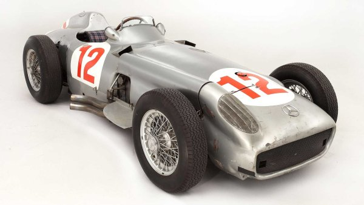
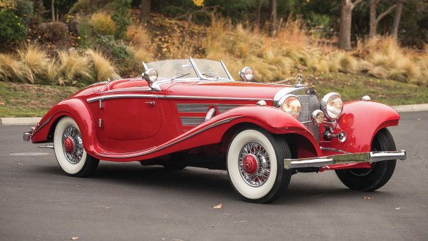
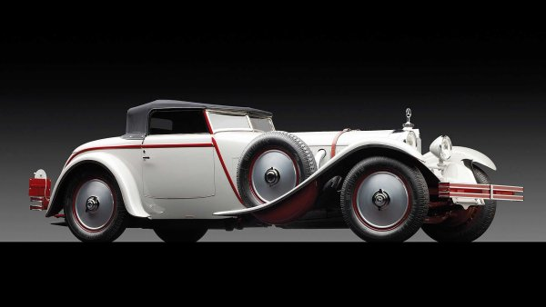

Модели
Най-скъките модели на Mercedes-Benz
- Mercedes 300 SLR Uhlenhaut (1956 година) - 135 милиона евро
- Mercedes W196R F1 (1954 година) - 22 милиона евро
- Mercedes 540 K Special Roadster (1937 година) - 9 милиона евро
- Mercedes 680 S Torpedo Roadster (1929 година) - 7,5 милиона евро
- Mercedes 500 K Roadster (1935 година) - 5,2 милиона евро
1.Mercedes 300 SLR Uhlenhaut (1956 година)
Mercedes -Benz 300 SLR ( W 196 S ) е двуместна спортна състезателна кола създадена през 1955 година. Колата е обозначена като "SL-R" (за Sport, Leicht, Rennen , eng: спортна, лека, състезателна версия ), което по-късно е съкратено до "SLR". Технически, W 196 S е базиран на W 196 R , но има малко по-различен двигател, работен обем 3 литра.
Точно като двигателя M 196 R на състезателя от Формула 1 W 196 R , двигателят M 196 S на 300 SLR е 3-литров редови осем двигател с директно впръскване (но със 78 мм отвор и ход); номиналната му мощност е 302 PS (222 kW
Mercedes-Benz 300 SLR Uhlenhaut Coupé от 1955 г. се превърна в най-скъпата кола, продавана някога, след като беше продаден на търг за 135 милиона евро. Колата, която преди е била собственост на Mercedes-Benz, е продадена от RM Sotheby's на неизвестен колекционер в музея на Mercedes-Benz на 5 май 2022 г.
Пилотът на отбора на Mercedes Стърлинг Мос спечели Mille Miglia през 1955 г. с 300 SLR, поставяйки рекорда на събитието от средно 157,650 км/ч (97,96 мили в час) за 1600 км (990 мили).

2.Mercedes W196R F1 (1954 година)
Mercedes -Benz W196 е състезателна кола от Формула 1, произведена от Mercedes-Benz за сезоните 1954 и 1955 F1. Наследник на W194 , в ръцете на Хуан Мануел Фанджо и Стърлинг Мос, той спечели 9 от 12 включени състезания и взе единствените два световни шампионата, в които се състезаваше. Първите включват използването на десмодромни клапани и Daimler-Benz разработи механично директно впръскване на гориво , адаптирано от DB 601 с висока производителност V12 , използван на изтребителя Messerschmitt Bf 109E по време на Втората световна война.
Първите включват използването на десмодромни клапани и Daimler-Benz разработи механично директно впръскване на гориво , адаптирано от DB 601 с висока производителност V12 , използван на изтребителя Messerschmitt Bf 109E по време на Втората световна война.

3.Mercedes 540 K Special Roadster (1937 година)
Представен на автомобилното изложение в Париж през 1936 г. , проектираният от Фридрих Гайгер автомобил е разработка на 500K , който сам по себе си е разработка на SSK . Предлага се както като двуместен, така и като четириместен кабриолет , четириместно купе или седемместна лимузина (с бронирани страни и бронирани стъкла), това беше един от най-големите автомобили на своето време.
през 1936 г.
Обемът на редовия 8- цилиндров двигател на 500K e увеличен до 5401 кубични сантиметра (329,6 куб. инча). Захранван е от двойни карбуратори с възходящо течение под налягане , развиващи 115 к.с. (86 kW).
Освен това има прикачен компресор Roots , който може да се включва ръчно за кратки периоди или автоматично, когато педалът на газта беше натиснат до пода. Това увеличава мощността до 180 к.с. (130 kW), позволявайки максимална скорост от 170 километра в час (110 mph).
За да се задоволят индивидуалните желания на клиентите, бяха налични три варианта на шасито, като за 500K: две дълги версии с междуосие 3 290 мм (130 инча), различаващи се по отношение на задвижването и разположението на каросерията; и къса версия с 2980 мм (117 инча). Дългият вариант, наречен нормално шаси с радиатор директно над предната ос, служи като гръбнак за четириместните кабриолети, „B“ (с четири странични прозореца) и „C“ (с два странични прозореца), и за туристически автомобили и салони. По-късото шаси беше за двуместния кабриолет „A“, монтирано на шаси, на което радиаторът, двигателят, кокпитът и всички задни модули

4.Mercedes 680 S Torpedo Roadster (1929 година)
Тази кола е със специална каросерия, дело на френската фирма J. Saoutchik. Под капака е поставен 6,8-литров двигател със 180 к.с., а каросерията е направена от алуминиеви сплави. За салона са използвани кожа от гущер и амарантово дърво. Това е последният от общо три автомобила, като през 2016 г. за него бяха платени 7,5 млн евро.
По време на производствения му период са построени по-малко от 40 SSK, от които около половината са продадени като Rennwagen (състезателни коли). Много от тях катастрофират по време на състезание и впоследствие предадени за части. Остават само четири или пет изцяло оригинални модела, а техният недостиг и богато наследство ги правят сред най-търсените автомобили в света

5.Mercedes 500 K Roadster (1935 година)
Mercedes -Benz 500K (W29) е голям туристически автомобил, произведен от Mercedes-Benz между 1934 и 1936 г. Първоначално изложен на автомобилното изложение в Берлин през 1934 г. , той носи фабричното обозначение W29. Отличаващ се от седана 500 с "K" за Kompressor (на немски за компресор ), монтиран само на тези мощни автомобили, той наследи Mercedes-Benz 380, представен точно предходната година. Той предлага както по-голям, по-мощен двигател, така и по-разкошна каросерия , за да отговори на изискванията на клиентите за по-голям лукс и производителност.
Mercedes 500 K Roadster от 1935 година с каросерия „Sindelfingen“ беше продаден през 2016 г. за 5,2 милиона евро. Той е един от общо 29-те роудстъра, които са произденени. Той е една от вечните класики, като има двигател със 160 к.с., развиващ 177 к.с. юбопитното е, че същият автомобил вече е бил продаван на търг през 2011 г. за 3,4 млн. евро.

Към началото 🚗
Мерцедес :)🚗